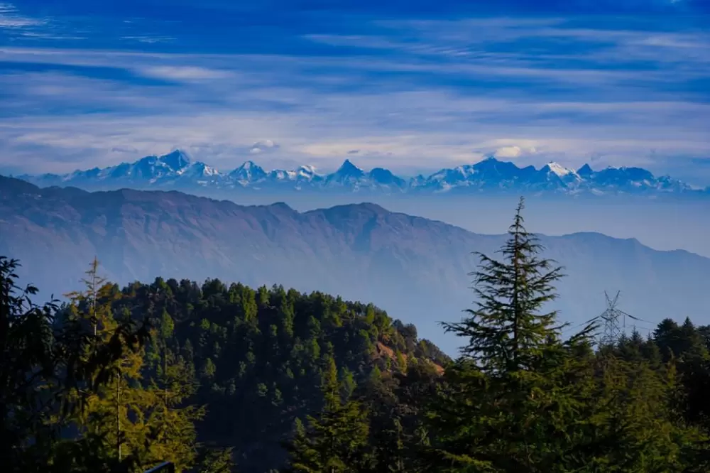
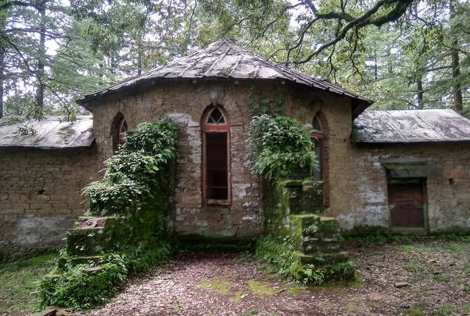
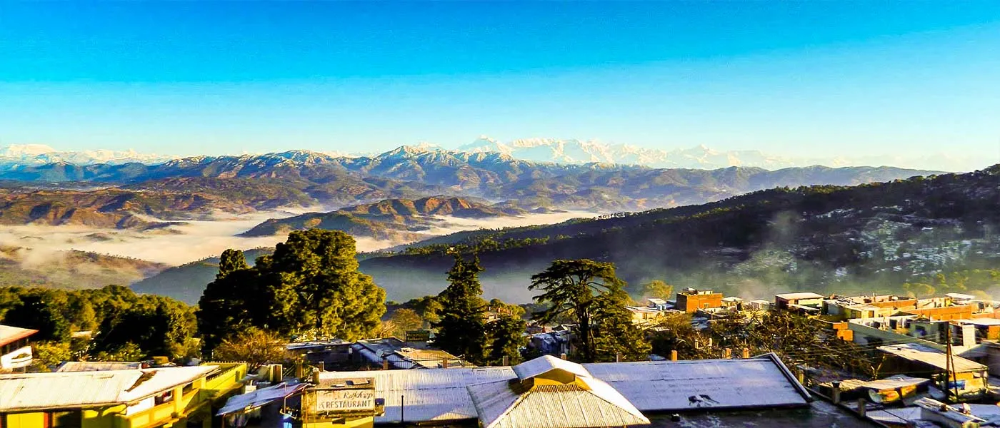

Abbott Mount is a serene and lesser-known hill station located in the Champawat district of Uttarakhand, perched at an altitude of around 2,100 meters. Established during the British era by John Harold Abbott, this charming place still preserves its colonial-era cottages, peaceful surroundings, and old-world charm. Surrounded by dense pine and deodar forests, Abbott Mount offers breathtaking panoramic views of the snow-clad Himalayan peaks, making it a perfect destination for those seeking solitude, nature, and tranquility away from crowded tourist spots.
The calm atmosphere, fresh mountain air, and scenic beauty make Abbott Mount ideal for relaxation, photography, and quiet getaways. The place is also known for its mysterious abandoned bungalows, adding a slightly eerie yet fascinating charm to the location. Whether you want to enjoy sunrise over the Himalayas, walk through silent forest trails, or simply disconnect from the busy world, Abbott Mount provides a peaceful and refreshing experience in the lap of nature.
March to June offers pleasant weather and clear views of the Himalayas, making it ideal for sightseeing and relaxation. September to November provides crisp air, greenery after monsoon, and peaceful surroundings with fewer tourists. Winters (December–February) can be cold with occasional snowfall, offering a cozy and misty hill-station vibe.
Panoramic Himalayan views, peaceful nature walks, exploring colonial-era cottages, sunrise and sunset photography, bird watching, and enjoying the quiet hill-station atmosphere. Nearby attractions include Lohaghat and Mayawati Ashram for spiritual and scenic experiences.
Carry warm clothes even in summer due to cool evenings. Book accommodations in advance as options are limited. Ideal for peaceful stays rather than nightlife or crowded tourism. Respect the silence and natural environment. Carry essentials as markets and facilities are minimal in this secluded location.
"At Abbott Mount, where silence rests in the forests and the Himalayas stand in quiet grandeur, every moment feels like a gentle escape from time — a place where peace lingers in the air and nature whispers its calmest secrets."